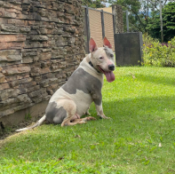
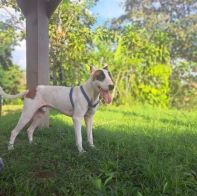
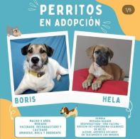
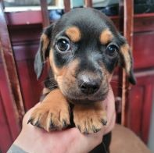
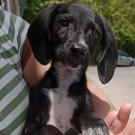
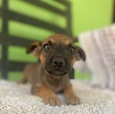
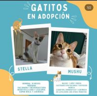
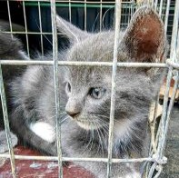
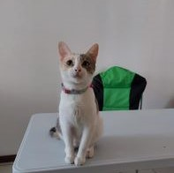

Adopciones
En esta sección encontrarás diversas imágenes de perritos o gatitos que buscan ser adoptados, puedes encontrar información
en las imágenes o en la descripción de cada imagen.

Perrita hembra, castrada y vacunada
Número: 6759-3405

Perrito macho, 2 años, castrado
Número: 7879-5604

Perritos machos, información en la imagen
Número: 6456-9807

Perrita hembra, dos meses
Número: 8787-5697

Perrito macho, siete meses
Número: 8787-5697

Perrito macho, mes y medio
Número: 6565-3456

Gatitas varias
Número: 7234-7232

Gatito macho, un mes
Número: 6789-0756

Gatito macho, dos años, castrado
Número: 8320-3192